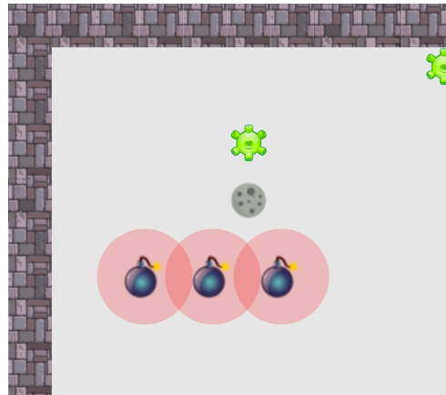
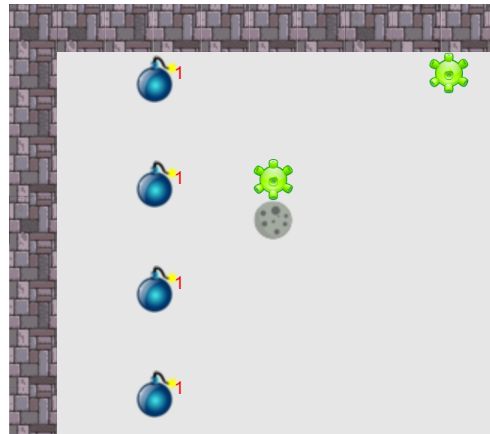
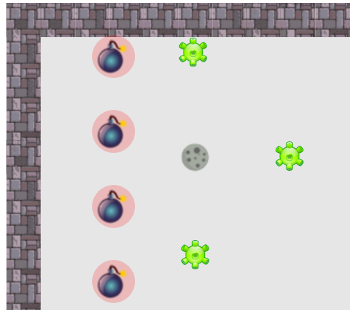
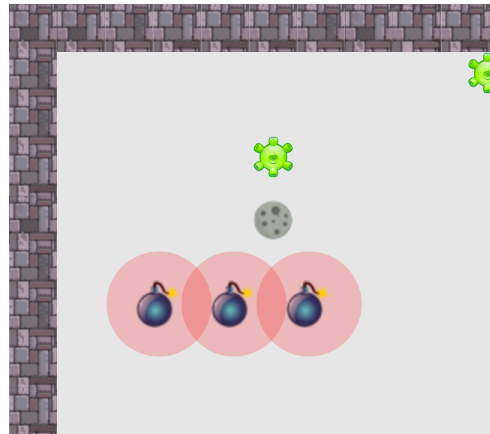
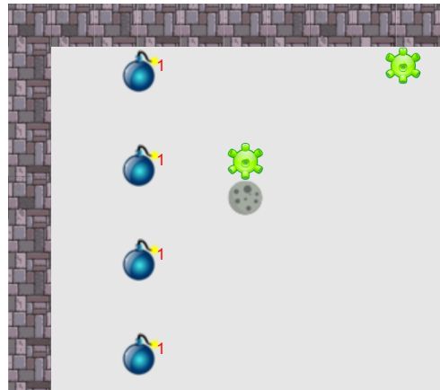
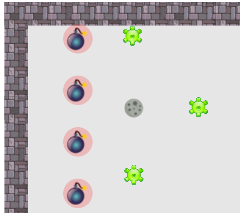

程式範例
遊戲時鐘（game_timer）
- 應用遊戲時鐘（game_timer）在特定時間設置炸彈
// 在時間 10 的時候，放置炸彈
if( game_timer == 10 ){
add_bomb(100,150,3) ;
}
// 在時間 5~10 之間（6,7,8,9），同一地點連續放置炸彈
if( game_timer > 5 && game_timer < 10 ){
add_bomb(100,150,1) ;
}
// 每間隔 7 秒，放置炸彈
if( game_timer % 7 == 0 ){
add_bomb(100,150,1) ;
}
空間設置技巧
- 直向、橫向擺放
 





// 開始位置 x:100，y:200
var bomb_x = 100 ;
var bomb_y = 200 ;
// 橫向每隔 50 間隔，放置炸彈 3 顆
for( var i=1 ; i<=3 ; i=i+1 ){
add_bomb( bomb_x , bomb_y , 3 ) ;
bomb_x = bomb_x + 50 ; // 間隔 50
}
// 縱向每隔 70 間隔，放置炸彈 4 顆
bomb_x = 100 ;
bomb_y = 50 ;
for( var i=1 ; i<=4 ; i=i+1 ){
add_bomb( bomb_x , bomb_y , 3 ) ;
bomb_y = bomb_y + 70 ; // 間隔 70
}
// 開始位置 x:100，y:180
var bomb_x = 100 ;
var bomb_y = 180 ;
// 間隔 40 ，橫向炸彈 3 顆，縱向 2 顆
for( var yi=1 ; yi<=2 ; yi=yi+1 ){
bomb_x = 100 ; // 回到最左側
for( var xi=1 ; xi<=3 ; xi=xi+1 ){
add_bomb( bomb_x , bomb_y , 3 ) ;
bomb_x = bomb_x + 40 ; // 往右移
}
bomb_y = bomb_y + 40 ; // 移向下一排
}
// 包圍洞穴 => 目標座標：hole_x , hole_y var range = 40 ; add_bomb( hole_x-range , hole_y ,3 ) ; // 左 add_bomb( hole_x+range , hole_y ,3 ) ; // 右 add_bomb( hole_x , hole_y-range ,3 ) ; // 上 add_bomb( hole_x , hole_y+range ,3 ) ; // 下
其他技巧
- 利用函式，簡化複雜的動作 ➩ 上下左右炸彈包圍
// 設計函式工具 : target_x , target_x 使用時傳入包圍的目標座標
function bomb_wall( target_x , target_y ){
var range = 40 ;
add_bomb( target_x-range , target_y ,3 ) ; // 左
add_bomb( target_x+range , target_y ,3 ) ; // 右
add_bomb( target_x , target_y-range ,3 ) ; // 上
add_bomb( target_x , target_y+range ,3 ) ; // 下
}
// 使用函式工具
bomb_wall( 150 , 300 ) ; // 包圍 150 , 300 的位置
bomb_wall( hole_x , hole_y ) ; // 包圍病毒洞穴
// 應用 for 找出每一個病毒
for( var i=0 ; i < enemy_list.length ; i=i+1 ){
var virus = enemy_list[i] ; // 取出陣列的病毒，放在 virus
if( virus == null ){
// 被殺掉的病毒
}else{
// 存活的病毒，運用 virus.sx , virus.sy 取得病毒位置
// 在位置上放炸彈
add_bomb( virus.sx , virus.sy , 1 ) ;
}
}